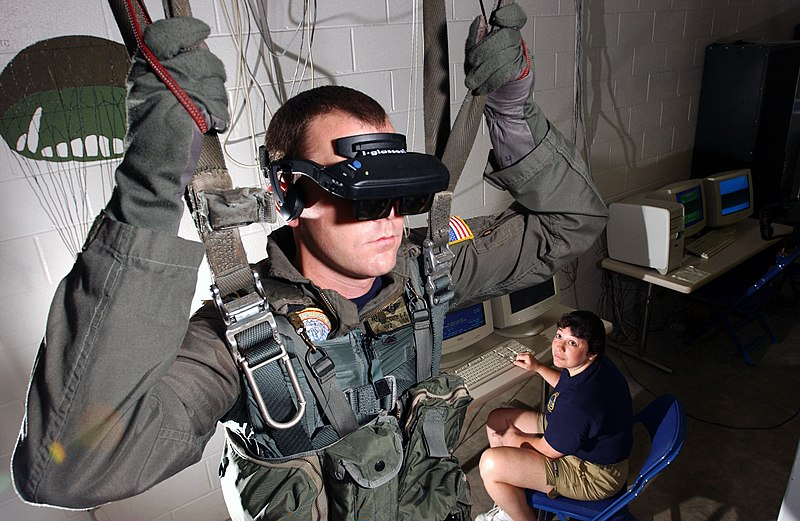

Virtual reality is most commonly used in entertainment applications such as video games, 3D cinema, and social virtual worlds. Consumer virtual reality headsets were first released by video game companies in the early-mid 1990s. Beginning in the 2010s, next-generation commercial tethered headsets were released by Oculus (Rift), HTC (Vive) and Sony (PlayStation VR), setting off a new wave of application development.[63] 3D cinema has been used for sporting events, pornography, fine art, music videos and short films. Since 2015, roller coasters and theme parks have incorporated virtual reality to match visual effects with haptic feedback.[47]
The first fine art virtual world was created in the 1970s. As the technology developed, more artistic programs were produced throughout the 1990s, including feature films. When commercially available technology became more widespread, VR festivals began to emerge in the mid-2010s. The first uses of VR in museum settings began in the 1990s, seeing a significant increase in the mid-2010s. Additionally, museums have begun making some of their content virtual reality accessible.
In the fast paced and globalised business world meetings in VR are used to create an environment in which interactions with other people (e.g. colleagues, customers, partners) can feel more natural than a phone call or video chat. In the customisable meeting rooms all parties can join using the VR headset and interact as if they are in the same physical room. Presentations, videos or 3D models (of e.g. products or prototypes) can be uploaded and interacted with.
 VR can simulate real workspaces for workplace occupational safety and health purposes, educational purposes, and training purposes. It can be used to provide learners with a virtual environment where they can develop their skills without the real-world consequences of failing. It has been used and studied in primary education, anatomy teaching, military, astronaut training, flight simulators, miner training, architectural design, driver training and bridge inspection. Immersive VR engineering systems enable engineers to see virtual prototypes prior to the availability of any physical prototypes. Supplementing training with virtual training environments has been claimed to offer avenues of realism in military and healthcare training while minimizing cost. It also has been claimed to reduce military training costs by minimizing the amounts of ammunition expended during training periods. VR can also be used for the healthcare training and education for medical practitioners.
Apollo 11 astronaut Buzz Aldrin previewing the Destination: Mars VR experience at the Kennedy Space Center Visitor Complex in 2016
In the engineering field, VR has proved very useful for both engineering educators and the students. A previously expensive cost in the educational department now being much more accessible due to lowered overall costs, has proven to be a very useful tool in educating future engineers. The most significant element lies in the ability for the students to be able to interact with 3-D models that accurately respond based on real world possibilities. This added tool of education provides many the immersion needed to grasp complex topics and be able to apply them. As noted, the future architects and engineers benefit greatly by being able to form understandings between spatial relationships and providing solutions based on real-world future applications.
Virtual reality's growing market presents an opportunity and an alternative channel for digital marketing.[105] It is also seen as a new platform for e-commerce, particularly in the bid to challenge traditional "brick and mortar" retailers. However, a 2018 study revealed that the majority of goods are still purchased in physical stores.
In social sciences and psychology, virtual reality offers a cost-effective tool to study and replicate interactions in a controlled environment. It can be used as a form of therapeutic intervention. For instance, there is the case of the virtual reality exposure therapy (VRET), a form of exposure therapy for treating anxiety disorders such as post traumatic stress disorder (PTSD) and phobias.
Virtual reality programs are being used in the rehabilitation processes with elderly individuals that have been diagnosed with Alzheimer's disease. This gives these elderly patients the opportunity to simulate real experiences that they would not otherwise be able to experience due to their current state. 17 recent studies with randomized controlled trials have shown that virtual reality applications are effective in treating cognitive deficits with neurological diagnoses. Loss of mobility in elderly patients can lead to a sense of loneliness and depression. Virtual reality is able to assist in making aging in place a lifeline to an outside world that they cannot easily navigate. Virtual reality allows exposure therapy to take place in a safe environment.
In medicine, simulated VR surgical environments were first developed in the 1990s. Under the supervision of experts, VR can provide effective and repeatable training at a low cost, allowing trainees to recognize and amend errors as they occur. Virtual reality has been used in physical rehabilitation since the 2000s. Despite numerous studies conducted, good quality evidence of its efficacy compared to other rehabilitation methods without sophisticated and expensive equipment is lacking for the treatment of Parkinson's disease. A 2018 review on the effectiveness of mirror therapy by virtual reality and robotics for any type of pathology concluded in a similar way. Another study was conducted that showed the potential for VR to promote mimicry and revealed the difference between neurotypical and autism spectrum disorder individuals in their response to a two-dimensional avatar.
Immersive virtual reality technology with myoelectric and motion tracking control may represent a possible therapy option for treatment-resistant phantom limb pain. Pain scale measurements were taken into account and an interactive 3-D kitchen environment was developed bases on the principles of mirror therapy to allow for control of virtual hands while wearing a motion-tracked VR headset. A systematic search in Pubmed and Embase was performed to determine results that were pooled in two meta-analysis. Meta-analysis showed a significant result in favor of VRT for balance.
Paid for by nobody, website created by Ryan Hoshall. Enjoy!
Copyright © 2021 · No Rights Reserved · Contact: RHoshall@my.harrisburgu.edu